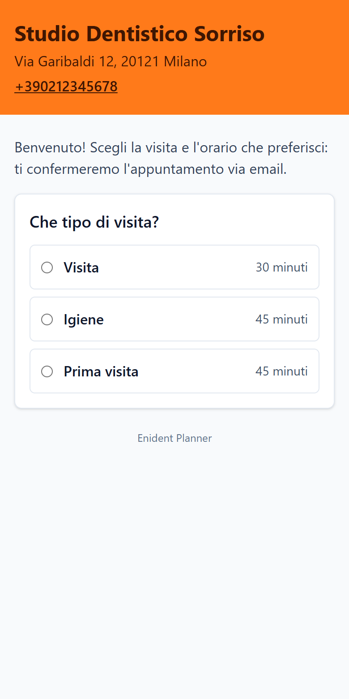
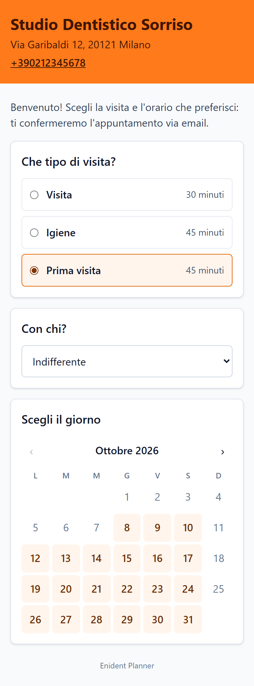

7. Prenotazione online
Con la prenotazione online i pazienti chiedono un appuntamento da una pagina web dello studio: scelgono il tipo di visita, l'operatore e un orario libero. La richiesta occupa subito lo spazio in agenda; lo studio la accetta o la rifiuta (oppure le conferma in automatico).
È compresa nei piani Studio e Multi studio.
Configurazione

In Impostazioni → Prenotazione online (proprietario e amministratori):
- Indirizzo della pagina: la parte finale del link (per esempio
studio-sorriso). Il Link per i pazienti compare accanto, con Copia. - Tipi prenotabili: spunta i tipi di appuntamento che si possono prenotare online. La durata online, se vuota, è quella del tipo.
- Operatori prenotabili: chi si può scegliere. Il paziente può anche scegliere «Indifferente».
- Fasce orarie online: come gli orari dello studio, oppure fasce proprie (per esempio solo il pomeriggio).
- Anticipo minimo (ore) e massimo (giorni): per esempio da 24 ore a 60 giorni.
- Massimo al giorno: quante richieste online accettare al massimo in un giorno (vuoto: senza limite).
- Conferma:
- Manuale: lo studio accetta o rifiuta ogni richiesta, entro le ore per confermare; poi la richiesta scade e l'orario si libera;
- Automatica: la richiesta è confermata subito.
- Messaggio di benvenuto: il testo in cima alla pagina.
- Informativa privacy dello studio: obbligatoria. Un link alla pagina dell'informativa oppure il testo. Usa il modello Enident compila un testo con i dati dello studio, da verificare con il consulente privacy prima di attivare. Ogni modifica crea una nuova versione, registrata insieme al consenso di ogni richiesta.
- Spunta Prenotazione online attiva e premi Salva.
Conservazione dei dati. I dati delle richieste rifiutate o scadute si cancellano da soli dopo 30 giorni; quelli delle richieste accettate entrano nella scheda del paziente. Indicalo nell'informativa.
Il cartello con il QR code
Accanto al link c'è il QR code della pagina:
- Scarica salva l'immagine ad alta risoluzione (per il sito, i social, i biglietti da visita);
- Stampa prepara un foglio A4 da appendere in sala d'attesa, con il nome dello studio, il QR code e la scritta «Prenota online inquadrando il codice».

La pagina per i pazienti
Il paziente apre il link (o inquadra il QR code) e, dal telefono o dal computer:
- sceglie il tipo di visita e, se ce n'è più d'uno, l'operatore (o «Indifferente»);
- sceglie il giorno nel calendario (sono evidenziati solo i giorni con orari liberi) e l'orario;
- scrive nome, cognome, telefono, email e, se vuole, una nota per lo studio;
- accetta l'informativa privacy dello studio;
- riceve per email un codice di 6 cifre e lo inserisce, per confermare che l'indirizzo è suo;
- conferma: con la conferma manuale vede «Richiesta inviata», con quella automatica «Appuntamento confermato».


Il paziente riceve le email di conferma (o di rifiuto) con il link per annullare, valido fino a 24 ore prima dell'appuntamento. Se annulla, l'appuntamento diventa annullato e il paziente finisce in Da richiamare.
La pagina mostra solo nome, indirizzo e telefono dello studio, e un controllo di sicurezza blocca gli invii automatici.
Gestire le richieste

Le richieste arrivate compaiono:
- in Richieste online, nel menu in alto, con il numero di quelle da gestire;
- in agenda, come appuntamenti tratteggiati con il globo, nello stato «Richiesta online».
Per ogni richiesta vedi dati, note del paziente e scadenza. Se telefono o email coincidono con un paziente già in archivio, Enident lo segnala («Stesso telefono o email di …») ma non li unisce mai da solo.
Accettare

- Premi Accetta….
- Scegli il paziente:
- il paziente proposto, se è la stessa persona;
- un altro paziente già registrato, da cercare;
- nuovo paziente con i dati della richiesta.
- Lascia l'orario richiesto oppure scegline un altro (il paziente lo saprà dall'email).
- Premi Accetta. L'appuntamento diventa prenotato e il paziente riceve l'email di conferma.
Rifiutare
- Premi Rifiuta….
- Scrivi, se vuoi, un messaggio per il paziente (es. «Quel giorno lo studio è chiuso: chiamaci per un altro orario»).
- Premi Rifiuta. Lo spazio si libera e il paziente riceve un'email (se non ha lasciato l'email, avvisalo per telefono).
Le stesse azioni ci sono nel clic destro sulla richiesta in agenda.
Richieste scadute
Se una richiesta con la conferma manuale non viene gestita entro le ore impostate, scade: lo spazio si libera, il paziente riceve un'email e finisce in Da richiamare con il motivo «Richiesta online scaduta». Se era una persona nuova, entra in archivio solo quando il richiamo si chiude come fatto.
Conferma automatica
Con la conferma automatica le richieste diventano subito appuntamenti. Se il paziente sembra già in archivio, la richiesta resta in Richieste online con «Accettata in automatico: scegli il paziente», per abbinarla alla scheda giusta.
Guida aggiornata alla versione 1.1.0 di Enident Planner.